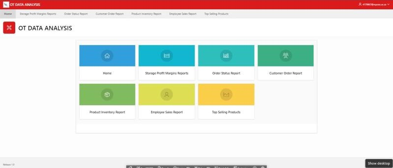
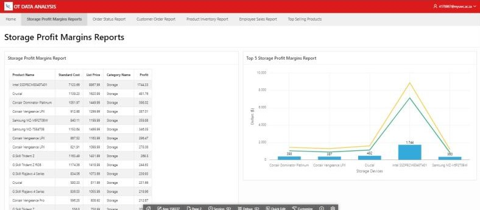
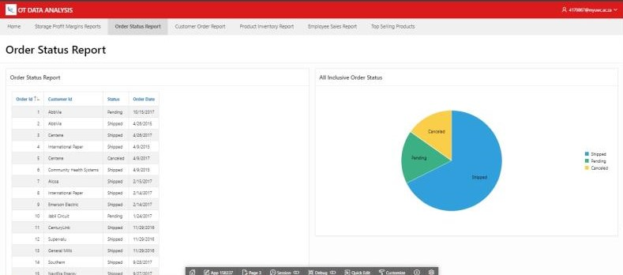
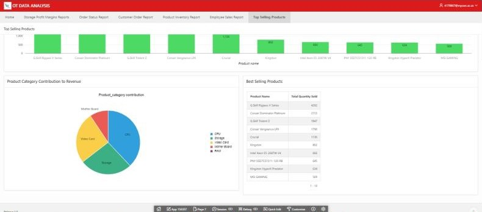
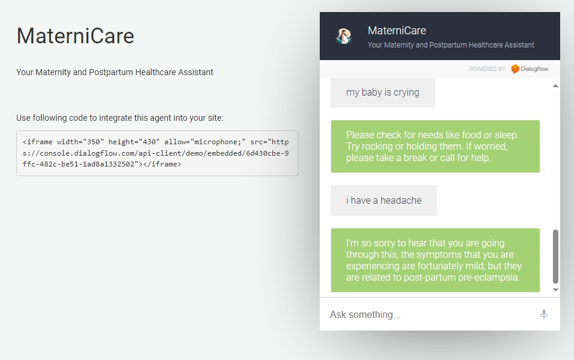
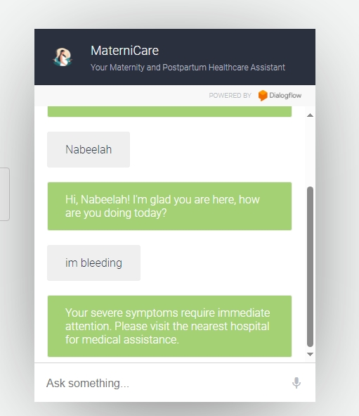

My Projects
DHT11 Sensor Data and Logging Analysis
- This project involved developing a Python application to interface with the Raspberry Pi and DHT11 temperature and humidity sensor.
- Captured real-time sensor data and displayed results with timestamps.
- Enhanced solution with CSV logging for analysis.
OT Data Analysis and Visualization
- Developed a web-based application using Oracle SQL, PL/SQL, and APEX for OT database visualization.
- Created a dashboard with dynamic reports, graphs and other visualizations to enhance decision-making using Tesla data.




Live Demo
Maternity and Postpartum Chatbot
- Developed a chatbot using Dialogflow focused on maternal health, for assessing danger signs, symptom severity, FAQs, and meal/exercise plans.



Live Demo
ML Crops Vision System
- Created an ML vision system to differentiate between radish and lettuce crops using PyTorch.
- Implemented data preprocessing, neural network model training, and evaluated performance.